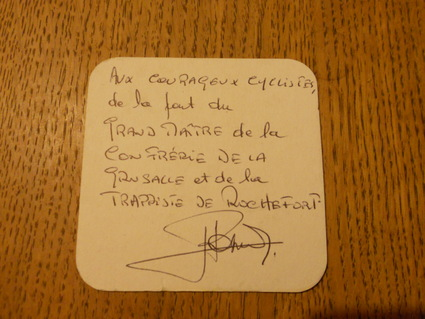

Operations Research and Beer drinking
I am just returning from Charlotte NC, where I had an amazing time at the INFORMS 2011 conference. Being in the airport waiting for my flight, I figured out I could use this spare time to share a cool story about Operations Research.
I happen to be a beer lover. If you're anything like me, you probably know Belgium produces among the best beers in the world. You also probably know about the trappist beers, which are some of the most famous and tastiest beers brewed in the area.
Two years ago, one of my friends had a crazy idea: He looked at a map, locating the trappist abbeys producing those excellent beers, and noticed they all were not very far from each other. He thus proposed a tour of Belgium that would visit all of them, by bicycle. I was immediately very enthusiastic about the idea and started to think about how to make it become true.
Planning the trip
So, given 7 cities and a tour to plan (The french abbey of Mont des Cats and the german abbey of Maria Toevlucht had not announced their plans of brewing their own beers at the time), can you guess what am I immediately thought about? That's right, the Travelling Salesman Problem! Of course, the problem itself is NP-hard, but in practice, with an instance of this size, it is doable manually.
I could have done it by myself, but this was a unique opportunity to use the online solver from the TSP website of the university of Georgia Tech! Since we did not actually needed to go back to the first abbey, I removed the longest edge.
I know what you are thinking: "Are you kidding me? A TSP Problem? If you remove an edge, this is not a tour, this is an Hamiltonian Path!". You are completely right, I did not solve the right problem. The thing is, I did not know any Online Hamiltonian Path Solver at the time, and this was probably the coolest use I could ever make of Concorde. Still a good story, isn't it?
Doing it!
Here is the trip as we planned it:
We ended up being two (me and my flatmate of the time - Mickael could not make it) with train tickets to Belgium. Cool facts about this trip:
- We discussed with "le grand maître de la confrérie de la grusalle et de la trappiste de Rochefort".

- We drank some "petit orval", a beer that you can find only at the abbey and at the bar (l'auberge de l'Ange Gardien) and we learned about the legend of Orval.
- The lady at the little shop in front of the abbey of Koningshoven (the one that brews la Trappe) was so amazed of what we were doing that she gave us a pack of 4 different flavors of Trappes which we brought back to France.
- In Gent, there is a barber which is called bar-bier, who (I believe) serves bier while shaving the clients.

- Gent and Antwerpen are two of the most beautiful cities I have ever seen.
The only sad thing about this trip is that we could not get to drink any Westvleteren : it is actually quite hard to get some, given the fact the monks over there have chosen to only produce as much beer as needed to finance the community: when we arrived, they did not have any beer left.
Conclusion
Three months ago, one of my best friends had the opportunity to get some Westvleteren and he invited me to taste them, offering me the opportunity to "finish my trip". For the record, the Westvleteren 12 is ranked the best beer in the world by ratebeer.com. Needless to say, I enjoyed it very much. He let me keep the capsules as a souvenir:
{kind=link}